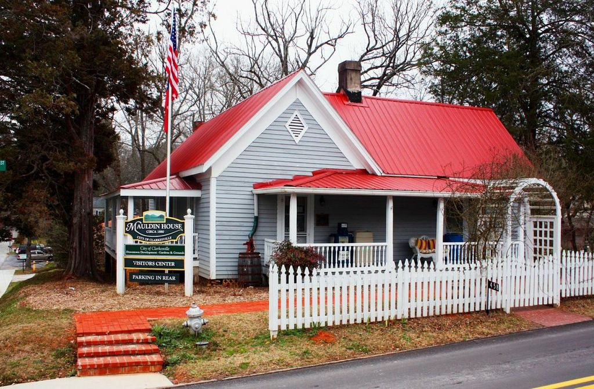
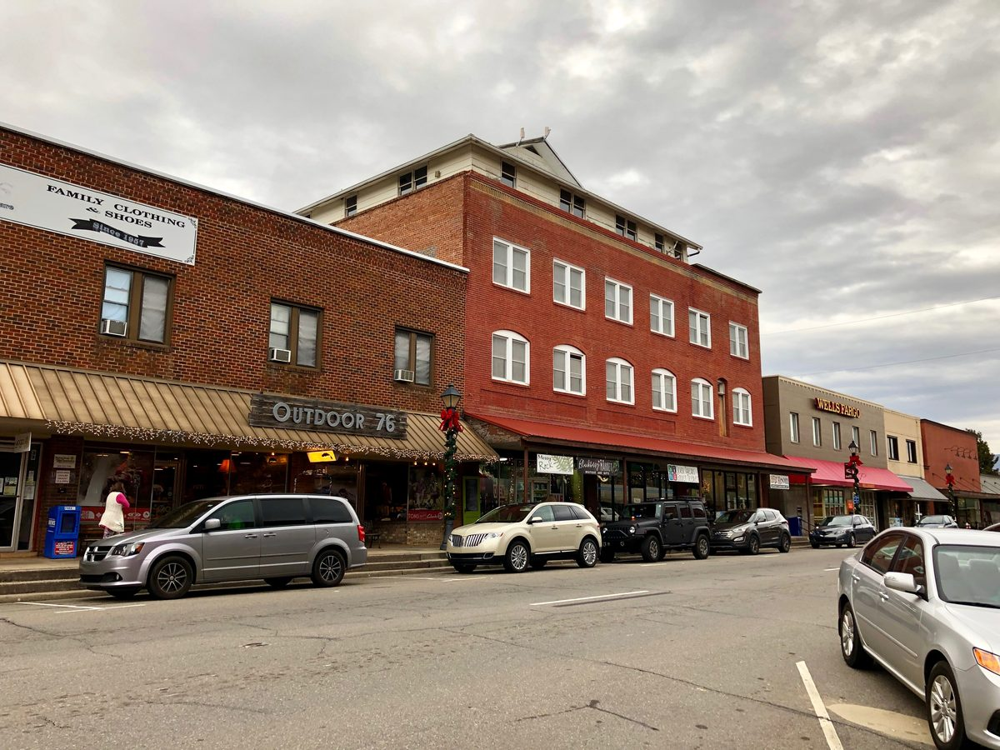
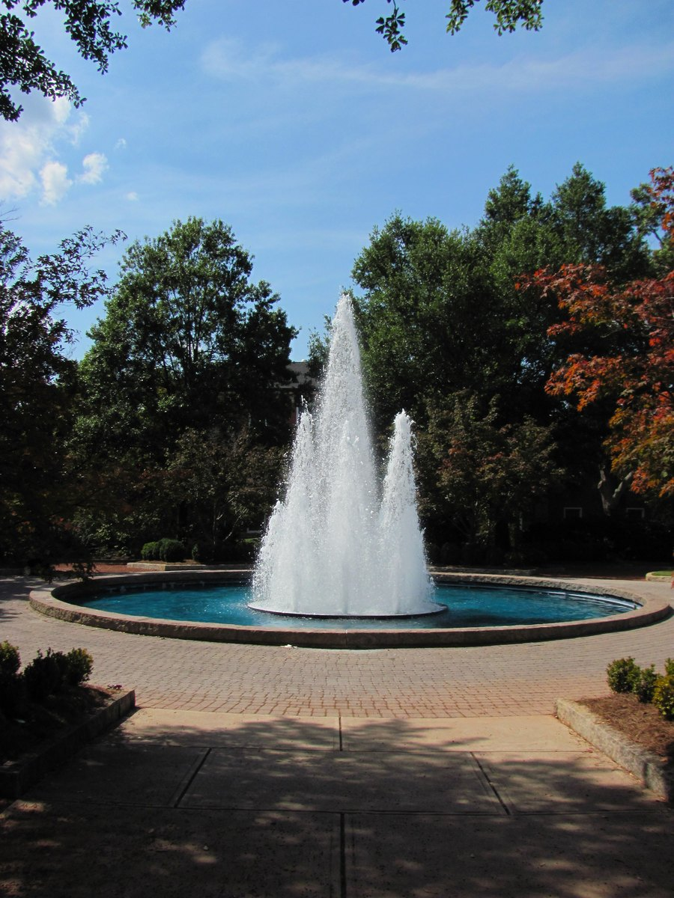
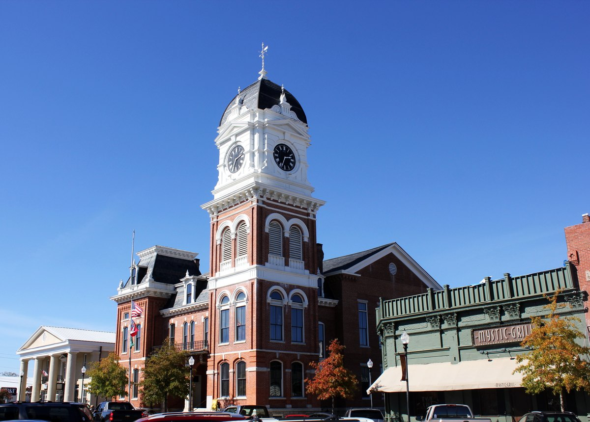
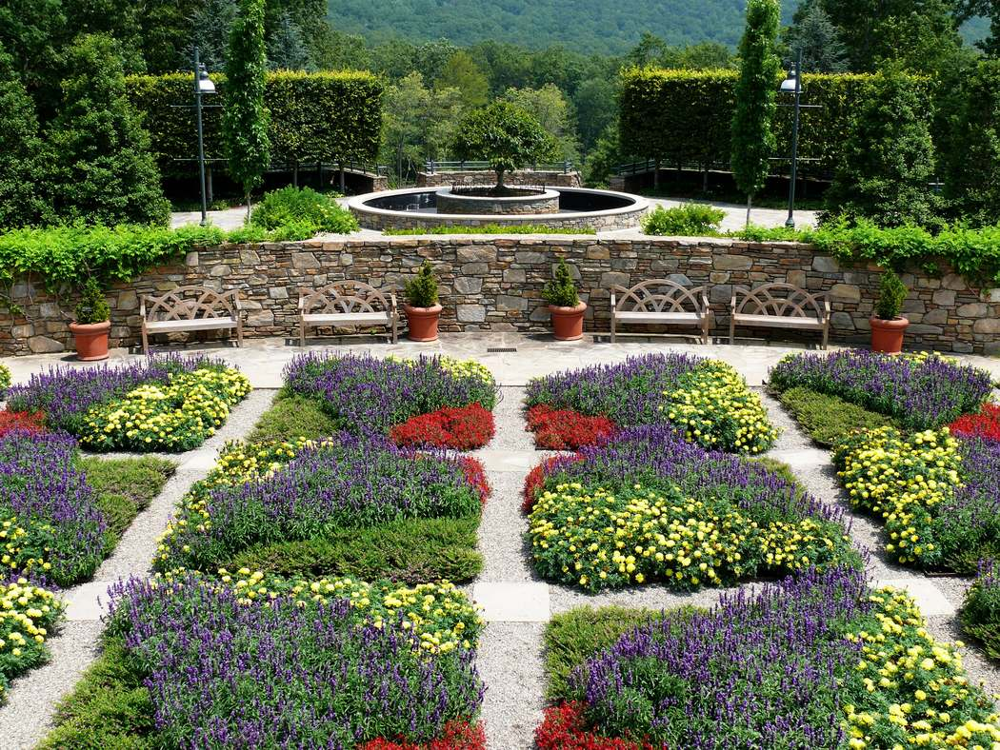

Includes 30 min preflight + 20 min postflight each way.
6:45 landing is a later option—not the default—with only 7 minutes to sunset. Reassess weather, delays and margins before choosing it.
Tap a destination. Photos and ideas first; pilot details inside. Transport and flight checks remain outstanding.

Best foothill balance
Clarkesville
25–35 min each way · 37 NM direct
Expand ideas & timing ＋
Things to do
Historic Mauldin House, Clarkesville · December 2013 photograph; not current foliage or a promise of interior access · ТимофейЛееСуда (TLSuda) · Source · CC0 1.0. Displayed copy resized and JPEG-compressed; thumbnails may crop via CSS. Adapted images retain their stated licenses.
Choose one easy pairing. Longer-day alternatives are labeled; photos are representative.
Explore
Soque Greenway Trail
A relaxed riverside and wetland walk near downtown; formerly Clarkesville Greenways. The published Phase I loop is about half a mile; choose a short out-and-back rather than committing to every trail.
No official opening/closing hours found; plan daylight only.
30–45 min · Friday short-window option · 20–25 min each way from airport (planning estimate, not live routing)
Browse the compact historic center and independent shops, or combine the square with lunch. Individual shops keep their own hours; historic house interior tours are not assumed.
Outdoor stroll: daylight recommendation, not a posted gate schedule. Mauldin House hours vary and tours are by appointment.
30–45 min · Friday short-window option · 20–25 min each way from airport (planning estimate, not live routing)
Handmade ceramics in a scenic Soque River setting on Highway 197. A distinctive art-and-river stop, but not a downtown add-on in the same tight lunch timetable.
Official site only posts SUMMER hours 10 am–6 pm daily; October hours remain unconfirmed.
45–60 min · Save for a longer afternoon / weekend; reconfirm seasonal hours · 35–45 min each way from airport (planning estimate, not live routing)
Dramatic canyon and waterfall views from rim trails. Keep this as a dedicated longer-day option, not lunch plus a rushed gorge hike.
Oct 23, 2026 is an official aesthetic water-release date (8 am–8 pm): gorge-floor hiking/climbing prohibited; southside staircase closed. Rim viewpoints are the relevant option. Check current park hours/alerts.
90–120 min · Longer day / weekend; NOT the short Friday default · 35–45 min each way from airport (planning estimate, not live routing)
A downtown lunch anchor at 135 Grant Street; convenient pairing with a short town stroll. Selected for location and character rather than an unverified mountain-view claim.
Thu–Sun opens 11 am; last seating around 8:30 pm; kitchen closes 9 pm.
45–60 min · Friday lunch option · 20–25 min each way from airport (planning estimate, not live routing)
A historic service station turned restaurant, with the original garage-door entrance and old photographs. Street-facing character, not a panoramic view.
Fri 10 am–9 pm; Sat 9 am–9 pm; Sun 9 am–8:30 pm; Mon–Thu 10 am–8:30 pm.
45–60 min · Friday lunch option · 20–25 min each way from airport (planning estimate, not live routing)
Runway 06 landing distance 4,111 ft; runway 24 5,503 ft.
OUT · 13:30–14:05KAJR: weather review needed
KLZU: planner VFR; KPDK proxy ends 14:00.
Destination is not covered in this planner snapshot; no category inferred.
BACK · 17:55–18:30KAJR: weather review needed
KLZU: planner VFR in 18–22 box; MOS point at 20:00, not exact 18:30 coverage.
Destination is not covered in this planner snapshot; no category inferred.
Snapshot Oct 22, 13:27 EDT · category displays are not flight clearance.
Wind, runway cautions & evidence +
06/24 · 5,503 × 100 ft · elevation 1,448 ft
Runway 06 landing distance 4,111 ft; runway 24 5,503 ft. Displaced threshold and trees.
Planner snapshot Oct 22 13:27 EDT. Home-airport guidance is not a route or destination forecast. VFR display is not a go/no-go recommendation.
Friday surface outlook: Sunny · 69°F · east 5–9 mph
Surface wind is in mph, not knots; sunshine is not ceiling/visibility evidence. NWS updated Oct 22 14:23–14:26 EDT; read 16:12–16:27 EDT. Retrieved KAHN/KPDK TAFs expire Friday 14:00 EDT and do not cover this afternoon / return. Refresh before departure.
FAA supplement effective Sep 3–Oct 29, 2026. Current aircraft status, performance, route briefing and airport/route NOTAMs still require verification.
2 hr 10 min planned at the destination. Choose one pairing.
Preflight at KLZU
Fly to KAJR
Park and secure
Transfer downtown
Lunch + stroll
Return transfer
Return preflight
Fly to KLZU
Secure aircraft
Flight times are planning estimates, not operational block times. Taxi, traffic, weather and pickup delays may shorten destination time. No bookings made.
Scenery along the way
Northeast toward Blue Ridge foothills: rolling wooded country and more prominent hills near arrival.
Geographic character, not a prescribed scenic route. Views depend on routing, altitude and weather.
Getting around
About 12 road miles · allow 20–25 min each way
Airport advertises on-site rental cars; reserve first. Uber lists Clarkesville, but driver availability and the return pickup are unconfirmed.
Confirm both pickup and return. Uber service-area coverage is not a live driver check.

Mountain town + river stroll
Franklin, NC
79 NM · estimated 45–55 min each way
Expand ideas & timing ＋
Things to do
Main Street in Franklin, North Carolina, January 2019; representative historic streetscape, not current foliage or venue interiors. · Warren LeMay · Source · CC0 1.0 · resized / JPEG-compressed; thumbnail may crop.
Choose one pairing; longer-day alternatives are labeled.
Explore
Little Tennessee River Greenway
Choose a short river-and-bridge out-and-back rather than the full4.5-mile network. Wetland/woodland habitat and a relaxed waterside pause.
Outdoor trail. Official partner page does not specify gate hours; use the daylight afternoon. FROG Quarters shop hours are separate and not promised.
Friday best fit:30–45min after lunch; shorten if seating or transfers slip. · 10–15 min each way from1A5 (estimate)
A75-foot waterfall with an accessible overlook and a trail behind the cascade. Dramatic scenery, but the winding drive consumes much of this afternoon.
Save for longer/weekend. Friday only as a single-focus alternative with confirmed car and reworked timing; do NOT add to downtown lunch plan. · 45–55 min each way (estimate); traffic/parking can add time.
French-inspired bistro with Mediterranean influences in an unexpected gas-station-side setting. Character rather than a view; good pairing with the river stroll.
Friday11:00–20:00. Reservations accepted only for parties10+; a couple is walk-in, wait unconfirmed.
Friday best dining fit: allow60–75min; made-to-order meal. · 10–15 min each way from1A5 (estimate)
A steakhouse-style alternative with seafood, ribs and lunch selections near the river corridor. Name alone does not establish a waterfront view, so none is promised.
Official Friday11:00–21:00. Seating/meal turnaround unconfirmed.
Friday alternative meal: allow60–75min; choose instead of Caffè REL. · 10–15 min each way from1A5 (estimate)
Actual river-overlooking garden at the Franklin location. Official site lists an onsite food truck, but its Friday service is not verified; do not rely on it as the only meal. Pilot: no alcohol.
Franklin taproom Fri12:00–22:00; food-truck hours separately unconfirmed.
Optional30–45min riverside pause instead of another activity, or save for longer visit. · 10–15 min each way from1A5 (estimate)
Mountain terrain rises in all quadrants. Both PAPIs listed out of service—verify current NOTAMs.
OUT · ~13:30 departure1A5: weather review needed
KLZU planner VFR; KPDK proxy ends 14:00.
Destination not covered by planner; no forecast category or wind inferred.
BACK · 18:30 planned landing1A5: weather review needed
KLZU planner VFR in 18–22 box; MOS point at 20:00 is not exact 18:30 coverage.
Destination not covered by planner; no forecast category or wind inferred.
Planner snapshot Oct 22 13:27 EDT; rechecked 17:32 EDT. Not a current briefing or flight clearance.
Airport evidence & operational checks +
FAA-derived airport data effective Oct 1; verify primary charts, NOTAMs, terrain and aircraft performance before departure. The 18:45 alternative has only 7 minutes to sunset.
Planning estimates only. Primary landing 18:30; secure by about 18:50. Do not trade preflight or operational margin for an extra stop.
Ground transport
Macon Air advertises Enterprise rental delivery. Courtesy car appears only in a secondary FlightAware listing; availability, time limits and return arrangements are unconfirmed. No reliable same-day rideshare availability established. Confirm a round-trip vehicle before committing. Airport attendance published 08:00–18:30.
Old Union County Courthouse, Blairsville · August 2006 photograph; representative destination scene · John Trainor · Source · CC BY 2.0. Displayed copy resized and JPEG-compressed; thumbnails may crop via CSS. Adapted images retain their stated licenses.
Choose one easy pairing. Longer-day alternatives are labeled; photos are representative.
Not in this shortlist: Vogel’s normal lake-loop / waterfall outing. Current park notice reports Lake Trahlyta drained and those trails closed. Park alerts
Explore
Meeks Park
Creek and river scenery, shady oaks, benches and easy-to-scale walking time. County lists 4.62 miles of trails in total; you need only a short section.
No park-wide gate hours verified; daylight visit recommended. Do not confuse recreation-office hours with trail hours.
30–45 min · Friday short-window option · 10–15 min each way from airport (planning estimate, not live routing)
Local-history exhibits inside the restored 1899 courthouse, with a compact town-square stroll outside. A useful indoor alternative if arrival is early enough.
Official museum guide: 10 am–4 pm, Mon–Sat May–December; Mon–Fri January–April. Arrive well before 4 pm.
30–45 min · Friday only if arrival leaves time before 4 pm · 10–15 min each way from airport (planning estimate, not live routing)
Panoramic Blue Ridge views from Georgia’s highest summit. Shuttle is included in regular admission; walking route is a steep 0.6 mile each way from parking.
Official visitor services daily 10 am–5 pm in season; last uphill shuttle 4:30, last return 5. $10/adult during regular hours. Weather can interrupt access.
90–120 min · Save for a longer day / weekend; not the Friday short-window default · 40–50 min each way from airport (planning estimate, not live routing)
The strongest documented view-led dining lead: upstairs windows and patio face the golf course and North Georgia mountains. Save as a candidate, not a guaranteed-open stop.
Chamber lists Tue–Sat 11 am–8 pm, but county records document a March 2026 operator change and other hours conflict. Current operation/hours need reconfirmation before relying on it.
45–60 min · View-led dining candidate; verify before Friday or a future trip · 10–15 min each way from airport (planning estimate, not live routing)
Destination is not covered in this planner snapshot; no category inferred.
BACK · 17:45–18:30KDZJ: weather review needed
KLZU: planner VFR in 18–22 box; MOS point at 20:00, not exact 18:30 coverage.
Destination is not covered in this planner snapshot; no category inferred.
Snapshot Oct 22, 13:27 EDT · category displays are not flight clearance.
Wind, runway cautions & evidence +
08/26 · 5,004 × 100 ft · elevation 1,907 ft
Landing distances 08: 4,017 ft / 26: 4,319 ft. Terrain, slope and displaced thresholds. Visual glide guidance unusable beyond 1.3 NM due to terrain; AWOS does not report ceiling.
Planner snapshot Oct 22 13:27 EDT. Home-airport guidance is not a route or destination forecast. VFR display is not a go/no-go recommendation.
Friday surface outlook: Sunny · 71°F · calm, then southeast around 5 mph
Surface wind is in mph, not knots; sunshine is not ceiling/visibility evidence. NWS updated Oct 22 14:23–14:26 EDT; read 16:12–16:27 EDT. Retrieved KAHN/KPDK TAFs expire Friday 14:00 EDT and do not cover this afternoon / return. Refresh before departure.
FAA supplement effective Sep 3–Oct 29, 2026. Current aircraft status, performance, route briefing and airport/route NOTAMs still require verification.
2 hr 10 min planned at the destination. Choose one pairing.
Preflight at KLZU
Fly to KDZJ
Park and secure
Ground transfer
Coffee + park time
Return transfer
Return preflight
Fly to KLZU
Secure aircraft
Flight times are planning estimates, not operational block times. Taxi, traffic, weather and pickup delays may shorten destination time. No bookings made.
Scenery along the way
Wooded ridges and valleys around Blairsville. The strongest mountain character, with more consequential terrain and routing decisions.
Geographic character, not a prescribed scenic route. Views depend on routing, altitude and weather.
Getting around
Downtown about 4–5 miles · allow 10–15 min each way; park transfer varies
Airport lists auto rental; availability unconfirmed. Uber lists Blairsville but no driver is verified. A reserved local private car is another option; obtain a quote and return commitment.
Confirm both pickup and return. Uber service-area coverage is not a live driver check.

Most time on the ground
Athens gardens
20–30 min each way · 32 NM direct
Expand ideas & timing ＋
Things to do
Herty Field fountain on UGA’s North Campus, September 2012; this is NOT the State Botanical Garden. · GAgayle · Source · CC BY-SA 3.0. Displayed copy resized and JPEG-compressed; thumbnails may crop via CSS. Adapted images retain their stated licenses.
Choose one easy pairing. Longer-day alternatives are labeled; photos are representative.
Explore
State Botanical Garden of Georgia
A gentle self-guided wander through themed display gardens; add woodland trails only when time allows.
Grounds daily 7 am–7 pm except UGA holidays. Visitor center, museum and shop Tue–Sat 9 am–4:30 pm; Sun 11:30 am–4:30 pm; Mon closed.
Best short-window choice: 60–90 minutes in the display gardens; indoor facilities close at 4:30 pm. · KAHN → garden: allow 15–20 minutes each way (estimate).
45–75 minutes is a useful short visit before the 5 pm closing; reserve free timed tickets first. · KAHN → museum: allow 10–15 minutes each way (estimate), plus parking and walking.
Start by the Arch and follow part of UGA’s self-guided map past historic campus landmarks, Herty Field and the Founders Memorial Garden.
Outdoor self-guided route: no published gate hours found; plan for daylight. Visitor Center Mon–Fri 8 am–5 pm, selected Saturdays 9:30 am–3 pm; closed Sunday, UGA holidays and home-football Saturdays.
30–60 minute outdoor stroll pairs naturally with The Place across Broad Street; easiest food-and-walk combination. · KAHN → downtown/Arch: allow 10–15 minutes each way (estimate), plus parking.
Refined Southern comfort food in a renovated downtown space. The second floor overlooks historic North Campus; ask about a window table, but a view seat and upstairs service are not guaranteed.
Mon–Thu 11 am–9 pm; Fri–Sat 11 am–10 pm; Sun brunch 10 am–2 pm and dinner 4–9 pm.
Good Friday lunch/late-lunch option. Allow 60–75 minutes plus any wait; pair with a short North Campus stroll rather than driving to a second distant stop. · KAHN → The Place: allow 10–15 minutes each way (estimate).
An Athens restaurant in a former music-club setting, with Southern cooking influenced by the Southwest. A character choice rather than a confirmed scenic-view restaurant.
Dinner daily from 5 pm; closing time not specified on official homepage. Brunch/lunch Sat–Sun 11 am–2 pm.
Not for this short Friday afternoon: official site lists dinner starting at 5 pm, with lunch only on weekends. · KAHN → Last Resort: allow 10–15 minutes each way (estimate).
Surface wind is in mph, not knots; sunshine is not ceiling/visibility evidence. NWS updated Oct 22 14:23–14:26 EDT; read 16:12–16:27 EDT. Retrieved KAHN/KPDK TAFs expire Friday 14:00 EDT and do not cover this afternoon / return. Refresh before departure.
FAA supplement effective Sep 3–Oct 29, 2026. Current aircraft status, performance, route briefing and airport/route NOTAMs still require verification.
2 hr 30 min planned at the destination. Choose one pairing.
Preflight at KLZU
Fly to KAHN
Park and secure
Transfer to garden
Explore the garden
Return transfer
Return preflight
Fly to KLZU
Secure aircraft
Flight times are planning estimates, not operational block times. Taxi, traffic, weather and pickup delays may shorten destination time. No bookings made.
Scenery along the way
East across rolling Piedmont, farms and woodlands—a gentler landscape, with the garden as the main event.
Geographic character, not a prescribed scenic route. Views depend on routing, altitude and weather.
Getting around
About 8–10 road miles · allow 15–20 min each way (estimate)
Airport explicitly lists Uber, Lyft, taxis and rentals. Best documented range of options, but no actual pickup or return driver has been confirmed.
Confirm both pickup and return. Uber service-area coverage is not a live driver check.

Short hop + rooftop square lunch
Covington
22 NM · estimated 20–30 min each way
Expand ideas & timing ＋
Things to do
Historic Covington square, including Newton County Courthouse and Mystic Grill façade; October 2012 photograph, not current conditions. · Haha169 · Source · CC BY-SA 3.0. Displayed copy resized and JPEG-compressed; thumbnails may crop via CSS. Adapted images retain their stated licenses.
Choose one easy pairing. Longer-day alternatives are labeled; photos are representative.
Explore
Historic square + Walk of Stars
A compact downtown stroll around the courthouse square: browse shops, spot familiar filming locations and follow star pavers celebrating films and TV productions. Self-guided and easy to shorten.
Outdoor self-guided walk; no gate hours published. Plan for daylight; individual shops set their own hours.
Friday fit: 30–45 minutes; pair with lunch rather than a scheduled multi-hour tour. · KCVC FBO → downtown square: allow 15–20 minutes each way (planning estimate, not live routing); the four downtown options are near one another.
Browse film memorabilia and local-history displays at the Welcome Center, then walk the two blocks toward the square. A useful indoor stop without committing to a longer guided tour.
Welcome Center Mon–Fri 9 am–5 pm; Sat 10 am–4 pm; Sunday closed. Regular hours from official tourism contact page; exceptional closures unconfirmed.
Friday fit: allow 20–40 minutes and arrive well before 5 pm. Optional addition, not required if lunch runs long. · KCVC FBO → downtown square: allow 15–20 minutes each way (planning estimate, not live routing); the four downtown options are near one another.
Southern food with a twist and a real rooftop overlooking Historic Covington Square. Strongest lunch-with-a-view choice here; rooftop seating is weather- and availability-dependent, not reserved or guaranteed.
Mon–Thu and Sun 11 am–9 pm; Fri–Sat 11 am–10 pm. Official published hours.
Friday fit: allow 60–90 minutes including a modest wait. Rooftop lunch + a short square walk is the primary pairing. · KCVC FBO → downtown square: allow 15–20 minutes each way (planning estimate, not live routing); the four downtown options are near one another.
A lighter, flexible alternative for sandwiches, pastries and specialty coffee in a brick storefront on the square. Choose this rather than a second full restaurant meal when ground time is tight.
Covington Square location: Sun–Thu 7 am–9 pm; Fri–Sat 7 am–10 pm. These are café hours, not a guarantee every sandwich is available all day.
Friday fit: allow 30–45 minutes for a light meal/coffee, plus any line. Shorter alternative to Mystic Grill. · KCVC FBO → downtown square: allow 15–20 minutes each way (planning estimate, not live routing); the four downtown options are near one another.
10/28: 6,000 × 100 ft; field elevation 820 ft (AirNav FAA data effective 2026-10-01, not yet checked against primary FAA supplement).
Declared LDA 10: 5,800 ft; LDA 28: 5,500 ft.
OUT · 13:30–14:00KCVC: weather review needed
KLZU: planner VFR; KPDK proxy ends 14:00.
Destination is not covered in this planner snapshot; no category inferred.
BACK · 18:00–18:30KCVC: weather review needed
KLZU: planner VFR in 18–22 box; MOS point at 20:00, not exact 18:30 coverage.
Destination is not covered in this planner snapshot; no category inferred.
Snapshot Oct 22, 13:27 EDT · category displays are not flight clearance.
Wind, runway cautions & evidence +
10/28: 6,000 × 100 ft; field elevation 820 ft (AirNav FAA data effective 2026-10-01, not yet checked against primary FAA supplement).
Declared LDA 10: 5,800 ft; LDA 28: 5,500 ft. Runway 28 has 500-ft displaced threshold and right traffic. Wildlife noted. Verify current FAA charts, NOTAMs, weather and aircraft performance before flight; older GDOT directory dimensions differ.
Planner snapshot Oct 22 13:27 EDT. Home-airport guidance is not a route or destination forecast. VFR display is not a go/no-go recommendation.
Friday surface outlook: Friday time-window weather not yet verified for KCVC.
KCVC is absent from the retained planner snapshot. No Friday time-specific forecast verified here; obtain current weather and flight-category evidence before choosing.
AirNav FAA-data snapshot effective Oct 1, 2026; primary FAA supplement cross-check outstanding. Current aircraft status, performance, route briefing and airport/route NOTAMs still require verification.
This later return reaches the FBO after its listed 5 pm close. Confirm car-return / after-hours arrangements; otherwise retain the earlier return plan.
2 hr 30 min planned at the destination. Choose one pairing.
KLZU preflight
Fly to KCVC
Park and secure
Transfer downtown
Lunch + square stroll
Return transfer
Return preflight
Fly to KLZU
Secure aircraft
Flight times are planning estimates, not operational block times. Taxi, traffic, weather and pickup delays may shorten destination time. No bookings made.
Scenery along the way
South from Lawrenceville across the Piedmont: woods, farms and suburban edges rather than mountain scenery. The main payoff is the historic square and rooftop view.
Geographic character, not a prescribed scenic route. Views depend on routing, altitude and weather.
Getting around
Allow 15–20 minutes each way from the southeast FBO to downtown (estimate).
Official airport links Enterprise’s FBO rental program. Courtesy cars are advertised in airport listings, but availability, fees, permitted duration and return deadline are unconfirmed. FBO is listed attended until 5 pm Friday: confirm the car return and after-hours arrangements. Do not assume a free car.
Confirm both pickup and return. Uber service-area coverage is not a live driver check.

Planner-covered mountain stretch
Mills River / Asheville
112 NM · planner ETA 49 min; allow 55–65 min each way
Expand ideas & timing ＋
Things to do
Blue Ridge Quilt Garden, NC Arboretum · July 2008 photograph. ALTERNATIVE KAVL activity, not Sierra Nevada and not current fall appearance. · Ken Thomas · Source · Public domain, released worldwide by photographer. Displayed copy resized and JPEG-compressed; thumbnails may crop via CSS. Adapted images retain their stated licenses.
Choose one easy pairing. Longer-day alternatives are labeled; photos are representative.
Explore
Sierra Nevada gardens & Back Porch
Woodland setting, estate garden and outdoor seating on the same property as lunch. Not a booked brewery tour, and not an alcohol-tasting plan.
Venue Friday11 am–10 pm; outdoor area weather dependent. Guided seasonal outdoor tour is Saturdays in September/early October, not a promised Friday activity.
Friday: brief same-site add-on only; never trade away return buffers · 10–15 min each way from KAVL FBO (estimate)
Southern-inspired small plates and fresh food at an impressive wooded brewery campus. Main dining room and Back Porch offer alternatives; views are trees/gardens rather than a guaranteed mountain panorama.
Display gardens and bonsai exhibition, with seasonal mountain-region planting. Choose this INSTEAD of Sierra Nevada; do not attempt both in the short window.
October property8 am–9 pm; incoming gate closes8 pm. Bonsai and Baker Exhibit Center9 am–5 pm. $25 standard-vehicle parking; check current access/construction updates.
Friday alternative if transfer is confirmed:45–60 min garden visit; fuller garden day saved for weekend · 20–30 min each way from KAVL FBO (estimate)
Class C airport, airline/ATC traffic and mountain routing.
OUT · 13:30–14:35KAVL: planner VFR · timing review
KLZU: planner VFR; KPDK proxy ends 14:00.
Native 12–18 TAF box says VFR, but retained TAF ends 14:00. Refresh for this leg.
BACK · 17:25–18:30KAVL: planner VFR · timing review
KLZU: planner VFR in 18–22 box; MOS point at 20:00, not exact 18:30 coverage.
Native 12–18 TAF box says VFR, but retained TAF ends 14:00. Refresh for this leg.
Snapshot Oct 22, 13:27 EDT · category displays are not flight clearance.
Wind, runway cautions & evidence +
17/35 · 8,002 × 150 ft · field elevation 2,164 ft
Class C airport, airline/ATC traffic and mountain routing. Published straight-line time is not a flight release. Obtain current route weather, NOTAMs and performance calculations; confirm FBO fees and return transport.
Planner snapshot Oct 22 13:27 EDT. Home-airport guidance is not a route or destination forecast. VFR display is not a go/no-go recommendation.
Friday surface outlook: Friday time-window wind unavailable in the retained planner evidence.
Planner snapshot Oct 22 13:27 EDT, fetched 17:19 EDT. Native VFR block is retained, not relabeled Predicted. Retained TAF ends Friday 14:00 EDT. No time-specific Friday wind verified. Refresh forecast before departure.
FAA current-cycle airport diagram, cycle2610. This is not a NOTAM clearance. Current aircraft status, performance, route briefing and airport/route NOTAMs still require verification.
Longer mountain flight: one venue only. Recheck routing, forecast coverage, FBO timing and return ride.
1 hr 30 min planned at the destination. Choose one pairing.
KLZU preflight
Outbound flight allowance
Shutdown / FBO / ground handoff
Drive to Sierra Nevada
One-site late lunch; brief garden look only if meal is prompt
Return transfer
Return preflight
Homeward flight allowance
KLZU postflight
Flight times are planning estimates, not operational block times. Taxi, traffic, weather and pickup delays may shorten destination time. No bookings made.
Scenery along the way
Blue Ridge mountain approach and wooded foothill destination; more terrain and routing considerations than the Georgia short-hop choices.
Geographic character, not a prescribed scenic route. Views depend on routing, altitude and weather.
Getting around
Sierra Nevada: allow 10–15 min each way from Signature FBO (estimate, not live routing). NC Arboretum: 20–30 min each way (estimate).
Signature Asheville operates 24/7 at40 Lindbergh Lane. Airport lists Uber, Lyft, taxis and car services, but this does not verify pickup at the GA FBO or availability at the restaurant. No crew car confirmed. Arrange a confirmed round-trip ground plan and check FBO handling/parking fees before committing.
Confirm both pickup and return. Uber service-area coverage is not a live driver check.
Foothill views
Foothill deck + small-town stroll
Jasper
37.7 NM · 30–40 min; timeline uses 35 min
Expand ideas & timing ＋
Things to do
Use the official photo-gallery links below; no unlicensed venue photographs are copied here.
Choose one pairing; longer-day alternatives are labeled.
Explore
Lee Newton Park + nearby downtown stroll
Short creekside walk with 0.3- and 0.42-mile loops and Veterans Memorial; pair with Main Street browsing rather than promise an attraction-heavy afternoon.
Mountain viewing decks and easy half-mile Eagle’s Rest Trail; the actual big-view option. Choose this instead of stacking downtown and a long restaurant meal.
Official site posts 07:00–20:00 but labels these summer hours; October gate schedule not separately confirmed. Automatic gate locks at posted closing; use daylight.
Longer/weekend preferred; Friday only as primary activity with quick food/picnic · 40–50 min each way from airport; mountain roads (planning estimate, not a live routed journey)
Historic Main Street pub with a mountain-view deck documented in its own event information; outdoor/view seating not guaranteed. Most flexible Friday food choice.
Official: Friday–Saturday 11:00–22:00.
Short Friday: 60–75 min · 10–15 min airport to 2 N Main Street (planning estimate, not a live routed journey)
Characterful historic inn restaurant: smart-casual lunch, a more intimate alternative to the pub. Reservations recommended by venue; no table availability checked.
Go directly after landing for about 14:35 lunch; 17:00 dinner is too tight for conservative return · 10–15 min airport to 44 Chambers Street (planning estimate, not a live routed journey)
Public, non-towered; runway 16/34 5,000 × 100 ft; elevation 1,535 ft. Deer/wildlife remark. AirNav FAA information effective 2026-10-01, not a current operational briefing.
Courtesy-car duration and return deadline unconfirmed.
OUT · ~13:30 departureKJZP: weather review needed
KLZU planner VFR; KPDK proxy ends 14:00.
Destination not covered by planner; no forecast category or wind inferred.
BACK · 18:30 planned landingKJZP: weather review needed
KLZU planner VFR in 18–22 box; MOS point at 20:00 is not exact 18:30 coverage.
Destination not covered by planner; no forecast category or wind inferred.
Planner snapshot Oct 22 13:27 EDT; rechecked 17:32 EDT. Not a current briefing or flight clearance.
Airport evidence & operational checks +
FAA-derived airport data effective Oct 1; verify primary charts, NOTAMs, terrain and aircraft performance before departure. The 18:45 alternative has only 7 minutes to sunset.
Use the illustrated pairing; confirm vehicle duration
KLZU preflight
depart KLZU
land KJZP
parking/shutdown/car handoff
transfer
lunch
park/downtown; retain waiting-time buffer
latest downtown departure (15 min drive + 5 min handoff)
return preflight/start/taxi allowance
depart; 18:30 land KLZU
shutdown complete
Planning estimates only. Primary landing 18:30; secure by about 18:50. Do not trade preflight or operational margin for an extra stop.
Ground transport
Courtesy car listed by FlightAware/iFlightPlanner, not availability-confirmed; duration, cost, fuel requirement and return policy unknown. Airport 193 Airport Road. Official airport rules list FBO 09:00–18:00 daily; have car back well before 18:00. Do not assume 3-hour leisure use is permitted.
Woodland garden and maintained forest trails; choose this instead of the lakewalk rather than trying everything. Admission/ticket availability not checked.
Official date-specific hours Oct 21–Nov 1: Tuesday–Sunday 09:00–17:00; Mondays closed.
Short Friday: 60–90 min; finish before 17:00 · 20–25 min airport to 1911 Sweetbay Drive (planning estimate, not a live routed journey)
Laid-back waterside dining at Gainesville Marina: made-to-order seafood, burgers and outdoor lake atmosphere. Best fit with nearby Longwood Park.
Official: Friday–Saturday 11:00–22:00.
Short Friday: 60–90 min; view/outdoor seating weather-dependent · 20–25 min airport to 2151 Dawsonville Highway; allow 10–15 min from Longwood (planning estimate, not a live routed journey)
A more unusual on-the-water setting at Port Royale Marina, accessible by car; farther away and first-come-first-served, so secondary to Skogie’s.
Official FAQ says year-round, seasonally varying hours. Current Hours page omits Friday; Explore Georgia lists Friday 11:00–22:00 and Tripadvisor 11:00–21:00. Friday afternoon opening likely but NOT official-date-confirmed.
Conditional Friday single-destination meal; longer/weekend preferable · 35–45 min airport each way to 8800 Port Royale Drive (planning estimate, not a live routed journey)
Public, non-towered; elevation 1,277 ft. Runway 5/23 5,496 × 100 ft, published LDA 5,370/5,100 ft; runway 11/29 4,003 × 100 ft with LDA 3,770 ft. Deer remark. Verify current FAA charts/NOTAMs.
Reduced landing distances; verify current charts and performance.
OUT · ~13:30 departureKGVL: weather review needed
KLZU planner VFR; KPDK proxy ends 14:00.
Destination not covered by planner; no forecast category or wind inferred.
BACK · 18:30 planned landingKGVL: weather review needed
KLZU planner VFR in 18–22 box; MOS point at 20:00 is not exact 18:30 coverage.
Destination not covered by planner; no forecast category or wind inferred.
Planner snapshot Oct 22 13:27 EDT; rechecked 17:32 EDT. Not a current briefing or flight clearance.
Airport evidence & operational checks +
FAA-derived airport data effective Oct 1; verify primary charts, NOTAMs, terrain and aircraft performance before departure. The 18:45 alternative has only 7 minutes to sunset.
Use the illustrated pairing; confirm vehicle duration
KLZU preflight
depart KLZU
land KGVL
shutdown/car handoff
transfer to Longwood
lake walk
transfer to Skogie’s
relaxed late lunch
leave restaurant, allowing 25 min return + 5 min handoff
return preflight/start/taxi allowance
depart; 18:30 land KLZU
shutdown complete
Planning estimates only. Primary landing 18:30; secure by about 18:50. Do not trade preflight or operational margin for an extra stop.
Ground transport
Champion Aviation advertises courtesy crew car and onsite rental cars. AirNav provider listing corroborates crew car and daylight-to-dusk service. Availability, permitted excursion length and fees not confirmed; reserve/confirm transport before making this plan.